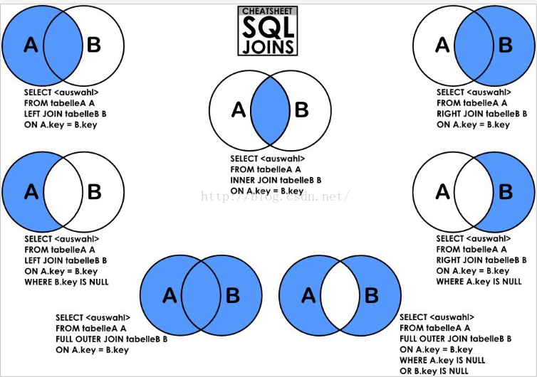

mysql 常用命令模板
创建数据库
drop database if exists db_guest;
create database if not exists db_guest default charset=utf8;
创建用户
insert into mysql.user(Host,User,Password) values("localhost","guest",password("guest"));
更新用户密码
SET PASSWORD FOR 'root'@'localhost' = PASSWORD('newpass');
删除用户
use mysql
Delete from user where user = "user_name" and host = "host_name" ;
使改变的用户生效
flush privileges;
对用户授权指定的数据库的表的所有权限
GRANT ALL PRIVILEGES ON db_guest.* TO 'guest'@'localhost' IDENTIFIED BY 'guest' WITH GRANT OPTION;
对用户授权指定的数据库的表的指定权限
grant select,update on db_guest.* to 'guest'@'localhost' identified by 'guest';
撤销权限 Revoke privileges (columns) on what from user ; privileges是要取消的权限，user是要被取消权限的用户名
revoke all on phpmyadmin.* from guest@localhost ;
设置phpadmin初始化用户 username:guest password:guest databasename:db_guest
drop database if exists db_guest; drop database if exists phpmyadmin; create database if not exists db_guest default charset=utf8; create database if not exists phpmyadmin default charset=utf8; insert into mysql.user(Host,User,Password) values("localhost","guest",password("guest")); flush privileges; GRANT ALL PRIVILEGES ON db_guest. TO 'guest'@'localhost' IDENTIFIED BY 'guest' WITH GRANT OPTION; GRANT ALL PRIVILEGES ON phpmyadmin. TO 'guest'@'localhost' IDENTIFIED BY 'guest' WITH GRANT OPTION;
mysql.server start
mysql.server stop
mysql -u root -p
exit
select * from mysql.user;//查询所有用户
status;
select version();
show global variables like 'port';
mysql> set characterset_client=utf8; mysql> set character_set_connection=utf8; mysql> set character_set_database=utf8; mysql> set character_set_results=utf8; mysql> set character_set_server=utf8; mysql> set character_set_system=utf8; mysql> set collation_connection=utf8; mysql> set collation_database=utf8; mysql> set collation_server=utf8; mysql> show variables like 'character_set%';
链接查询

路人甲java的mysql教程（阿里P7）
记录一次存储过程
CREATE DEFINER=`root`@`%` PROCEDURE `copyTaskToNew`(IN `originJobGroup` int,IN `targetJobGroup` int)
BEGIN
DECLARE done BOOLEAN DEFAULT 0 ;
DECLARE jobCron varchar(128) DEFAULT '0 0/3 * * * ?';
DECLARE jobDesc varchar(255) DEFAULT '';
DECLARE addTime datetime DEFAULT NULL;
DECLARE updateTime datetime DEFAULT NULL;
DECLARE author varchar(64) DEFAULT NULL;
DECLARE alarmEmail varchar(255) DEFAULT NULL;
DECLARE executorRouteStrategy varchar(50) DEFAULT NULL;
DECLARE executorHandler varchar(255) DEFAULT NULL;
DECLARE executorParam varchar(5120) DEFAULT NULL;
DECLARE executorBlockStrategy varchar(50) DEFAULT NULL;
DECLARE executorTimeout int(11) DEFAULT '0';
DECLARE executorFailRetryCount int(11) DEFAULT '0';
DECLARE glueType varchar(50) DEFAULT 'BEAN';
DECLARE glueSource mediumtext;
DECLARE glueRemark varchar(128) DEFAULT NULL;
DECLARE glueUpdatetime datetime DEFAULT NULL;
DECLARE childJobid varchar(255) DEFAULT NULL;
DECLARE cur CURSOR FOR
SELECT
job_cron as jobCron,
job_desc,
add_time,
update_time,
author,
alarm_email,
executor_route_strategy,
executor_handler,
executor_param,
executor_block_strategy,
executor_timeout,
executor_fail_retry_count,
glue_type,
glue_source,
glue_remark,
glue_updatetime,
child_jobid
FROM
XXL_JOB_QRTZ_TRIGGER_INFO
WHERE job_group = originJobGroup;
DECLARE CONTINUE HANDLER FOR SQLSTATE '02000' SET done = 1 ;
OPEN cur ;
REPEAT
FETCH cur INTO
jobCron,
jobDesc,
addTime,
updateTime,
author,
alarmEmail,
executorRouteStrategy,
executorHandler,
executorParam,
executorBlockStrategy,
executorTimeout,
executorFailRetryCount,
glueType,
glueSource,
glueRemark,
glueUpdatetime,
childJobid;
INSERT INTO XXL_JOB_QRTZ_TRIGGER_INFO
(
job_group,
job_cron,
job_desc,
add_time,
update_time,
author,
alarm_email,
executor_route_strategy,
executor_handler,
executor_param,
executor_block_strategy,
executor_timeout,
executor_fail_retry_count,
glue_type,
glue_source,
glue_remark,
glue_updatetime,
child_jobid
)
VALUES
(
targetJobGroup,
jobCron,
jobDesc,
addTime,
updateTime,
author,
alarmEmail,
executorRouteStrategy,
executorHandler,
executorParam,
executorBlockStrategy,
executorTimeout,
executorFailRetryCount,
glueType,
glueSource,
glueRemark,
glueUpdatetime,
childJobid
) ;
UNTIL done
END REPEAT ;
CLOSE cur ;
END